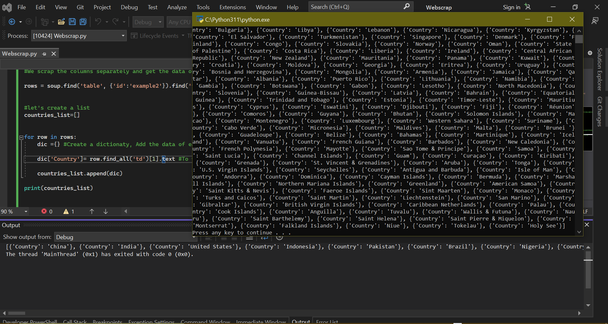

The first process begins by importing BeautifulSoup and the Pandas library after the pip install(if needed) as well as the requests to send request and get back the Html page.
2. WebScrapping
Assign the url and request the page.
Use the Beautiful soup to parse the html and print it to view all the tags
Inspect the elements
Go to the webpage to inspect the elements to identify the tag where the data of interest is embedded
In this case, we will be scrapping the columns separately
Create a list and a dictionary to add the data in the column and append the dictionary.

In doing this, all the data scrapped will be assigned to a dictionary ready to be converted into a dataframe
3. Storing the extracted data
The data in the dictionary can now be saved by conveting it into a dataframe using the Pandas library.
The data have now been saved and can be opened in csv or xlsx format using the MS-Excel as shown above.